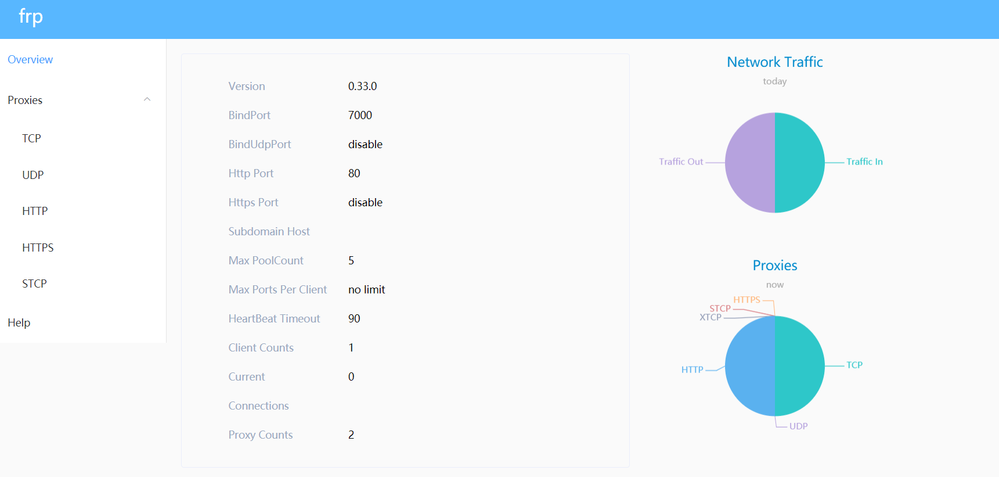

Frp
 项目首页
项目首页
frp 是一个专注于内网穿透的高性能的反向代理应用，支持 TCP、UDP、HTTP、HTTPS 等多种协议。可以将内网服务以安全、便捷的方式通过具有公网 IP 节点的中转暴露到公网。

 如何部署在线 frp(Fast Reverse Proxy)
如何部署在线 frp(Fast Reverse Proxy)
什么是 frp(Fast Reverse Proxy)
- frp(Fast Reverse Proxy) 是一个高性能的反向代理工具，使用 Go 语言编写，能够帮助你轻松地将内网服务暴露到公网，实现安全、快速、便捷的内网穿透。它支持 TCP、UDP、HTTP、HTTPS 等多种协议，并提供丰富的功能，例如自定义域名、负载均衡、加密传输等，能够满足各种场景下的内网穿透需求。
功能列表
- TCP/UDP 穿透：支持最常见的 TCP 和 UDP 协议。
- HTTP/HTTPS 穿透：轻松暴露内网的 Web 服务。
- STCP：为 TCP 连接提供额外的安全层。
- SUDP：安全的 UDP 协议支持。
- TLS 加密：支持传输层安全协议，保护数据传输。
- 身份验证：提供多种身份验证方式，如 token、OIDC 等。
- 带宽限制：可以对每个代理进行带宽限制，防止资源滥用。
- 负载均衡：支持多个代理的负载均衡。
- 健康检查：自动检测后端服务的健康状态。
- 热重载：支持配置热重载，无需重启服务。
- 插件系统：提供插件机制，方便功能扩展。
- 简洁的配置：采用 TOML 格式，配置简单直观。
- Dashboard：提供 Web 界面，方便监控和管理。
- 多平台支持：支持 Windows、Linux、MacOS 等多个平台。